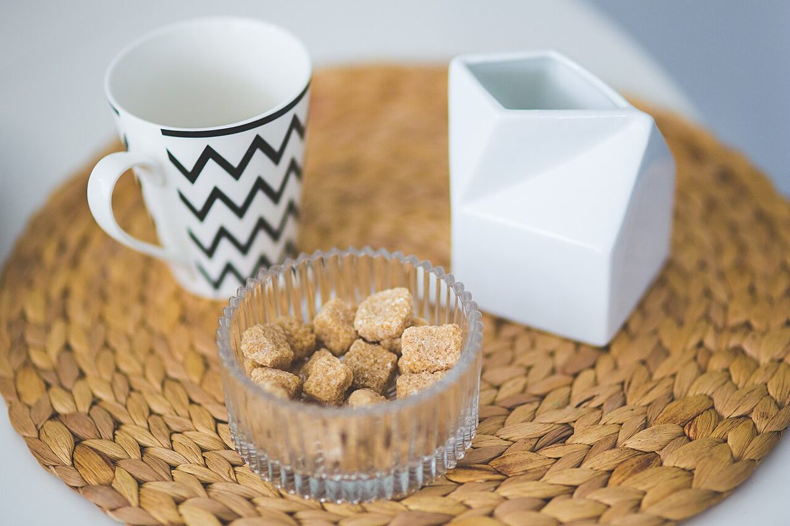
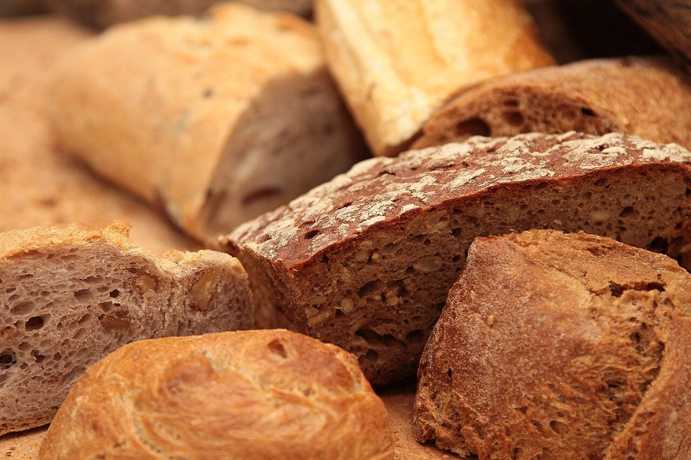

口コミ
こんな声が届くかも。
カフェという業種から自然に考えられる声を、制作側が創作したものです。
以下は制作側が考えた創作のイメージ例で、実在のお客様の投稿ではありません。実際の口コミ・評価とは関係ありません。
営業時間などが分かったら、行ってみたいです。それまでは、Instagramの更新を楽しみにしています。
Instagramを少しずつのぞいてみたいです。お店のことが分かる日を、楽しみに待っています。
いつか行ってみたいと思っています。まずはInstagramで、お店のことを知るところから始めたいです。

